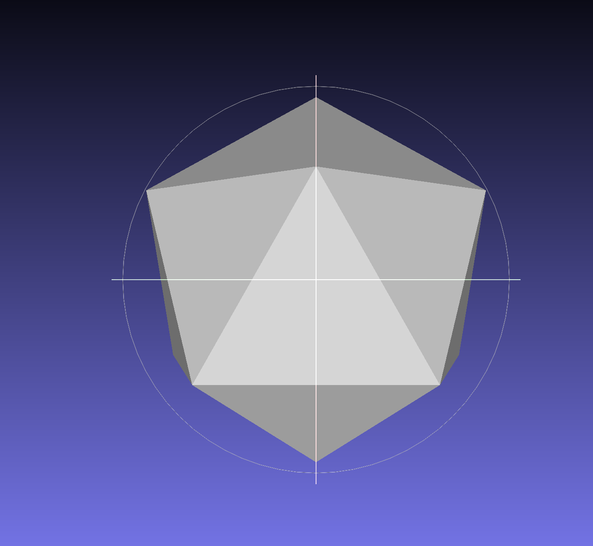
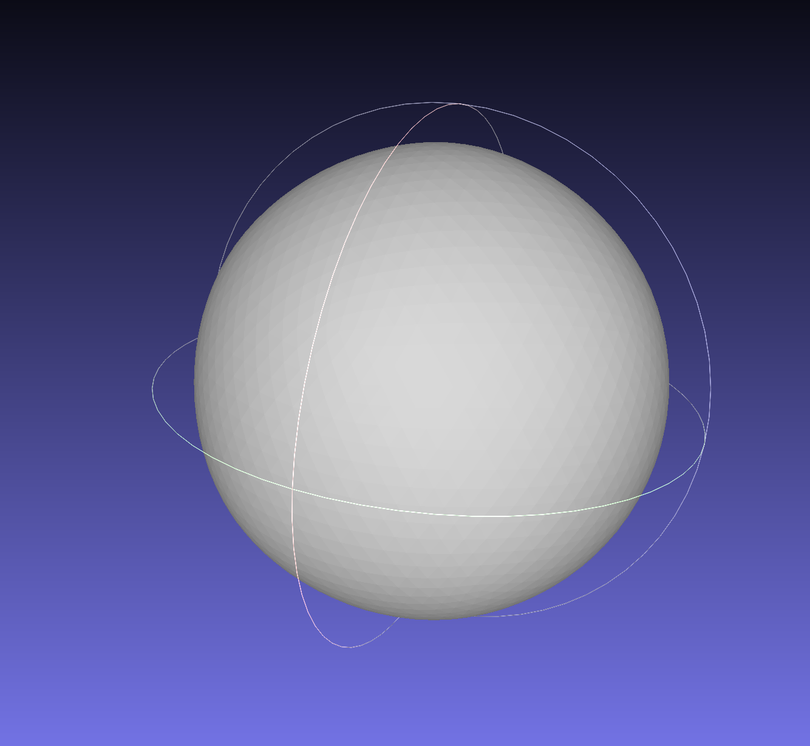
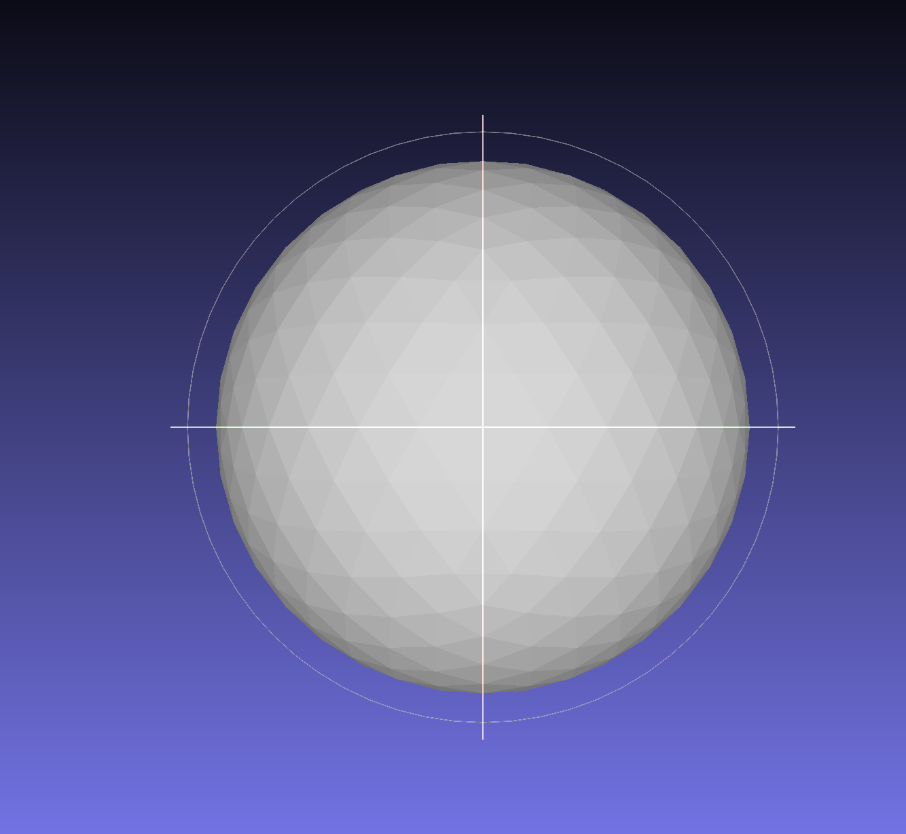
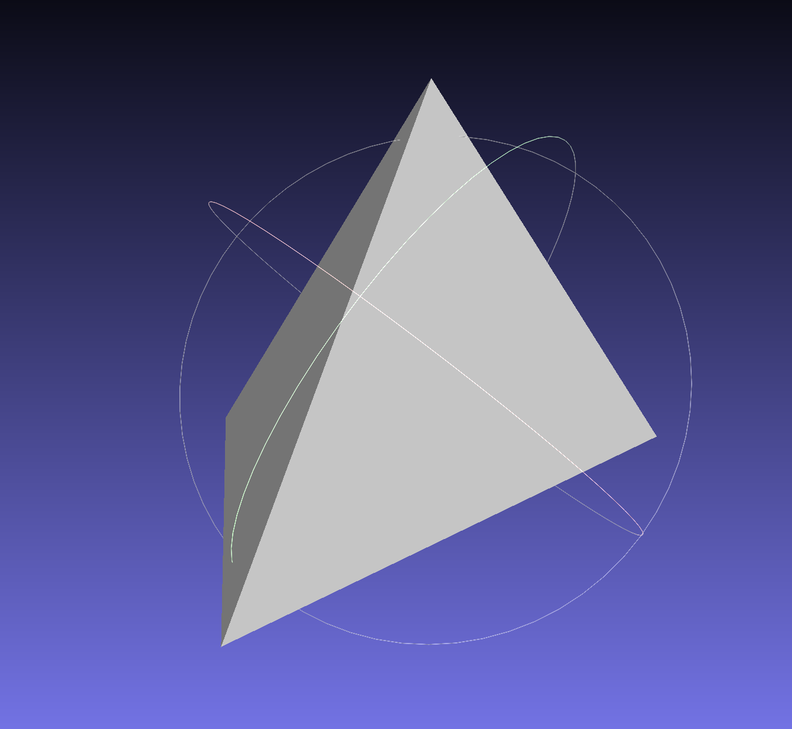
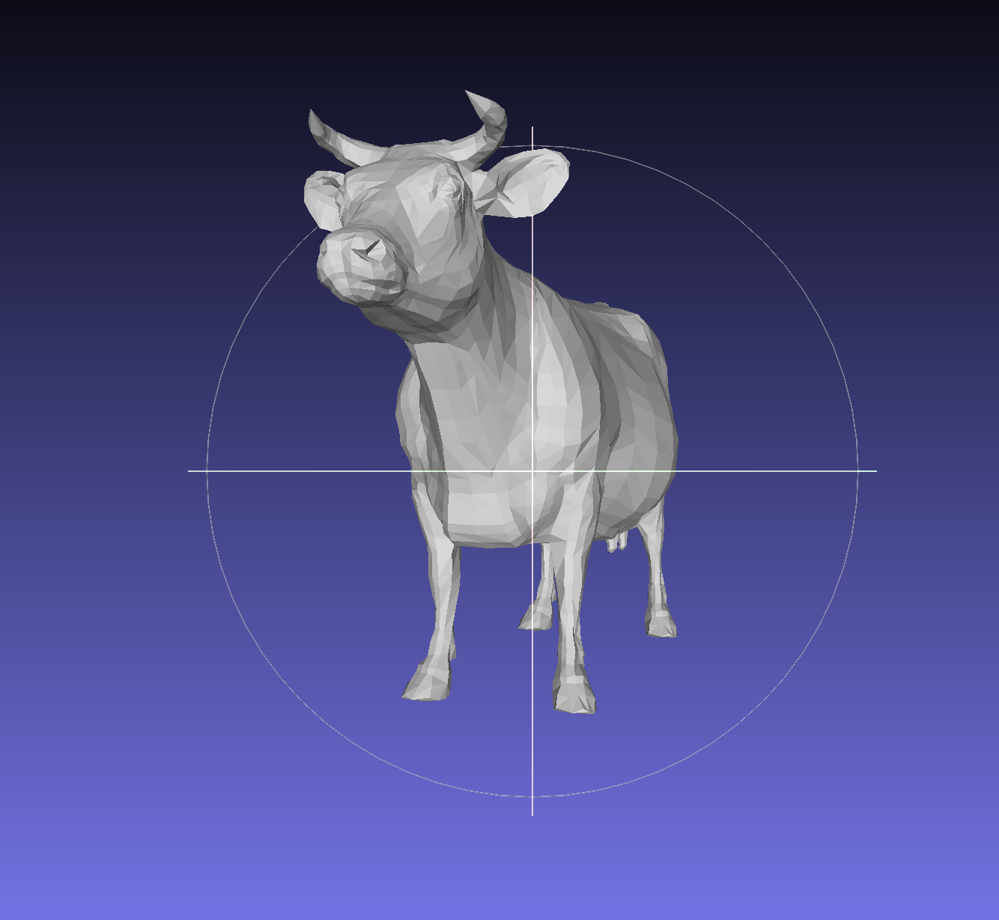
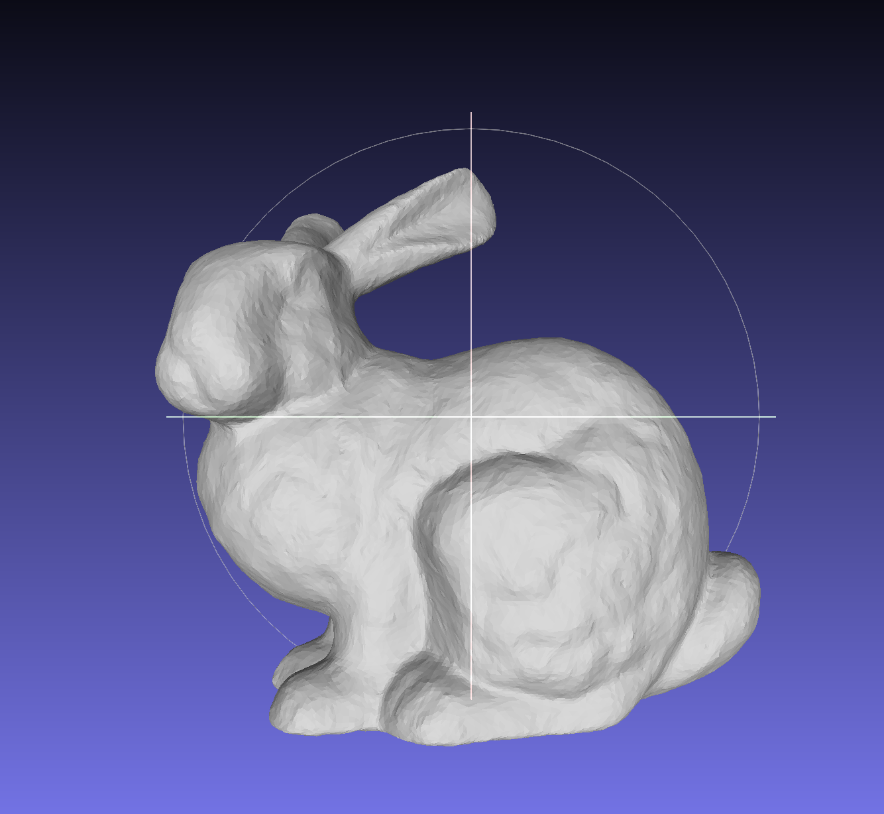

Mesh
For my advanced computer graphics class I wrote a mesh processor to take in an OBJ file with vertices and faces, convert it to a half edge data structure, then perform mesh operations. The mesh operations I wrote include atomic mesh operations (edge split, flip, and collapse), which are used to support loop subdivision, quadric error simplification, and bilateral mesh denoising.
Below are example resulting meshes! Drag the slider on each one to compare before and after.


Original Subdivided

Original Simplified
 Original
Simplified
Original
Simplified

Noisy Denoised